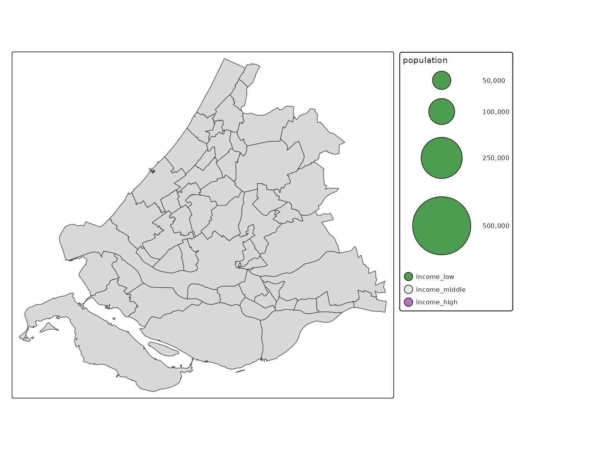

Glyphs in spatial data visualization are graphical symbols that represent data values at specific geographic locations. Each glyph can encode multiple data variables.
With the extension package tmap.glyphs (in development) glyphs can be created. Currently only the donut and flower glyphs are implemented.
Donut maps
ZH_muni = NLD_muni[NLD_muni$province == "Zuid-Holland", ]
ZH_muni$income_middle = 100 - ZH_muni$income_high - ZH_muni$income_low
which.max(ZH_muni$population)
ZH_muni$population[c(10,26)] = 500000
ZH_muni$income_high[1:15] = NA
tm_shape(ZH_muni) +
tm_polygons() +
tm_donuts(parts = tm_vars(c("income_low", "income_middle", "income_high"), multivariate = TRUE),
fill.scale = tm_scale_categorical(values = "-pu_gn_div"),
size = "population",
lwd = 1,
size.scale = tm_scale_continuous(ticks = c(50000, 100000, 250000, 500000)),
options = opt_tm_donuts(fill_hole = FALSE))